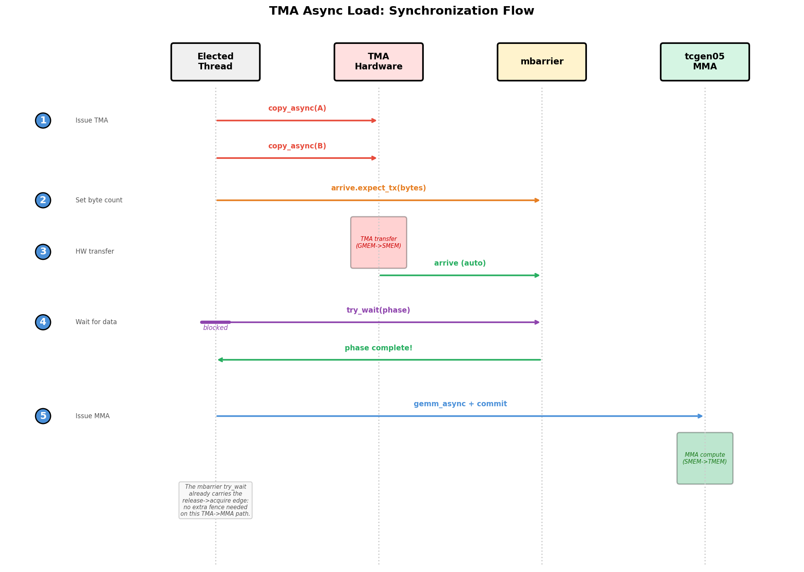

4. Pipelining GEMM with TMA¶
The previous chapter built a correct tiled GEMM. This chapter keeps the same tile data path, but changes how data movement and compute are scheduled.
The following steps are incremental. Step 4 moves the large GMEM <-> SMEM transfers onto TMA. Step 5 adds a two-stage software pipeline so TMA for the next K tile can overlap MMA on the current tile. Step 6 turns the launch into a persistent kernel with a tile scheduler. The SMEM, TMEM, and register layouts still follow the contracts introduced earlier; the new focus is asynchronous handoff between hardware units.
4.1. Step 4: TMA Async Load¶
Step 4 replaces synchronous Tx.copy with TMA hardware. One thread
issues the command, and the hardware performs the tile movement. These
steps work at the full M=N=K=4096 size — not the single 128×128 tile of
Chapters 1–3 — and their end-to-end timings appear in Chapter 5’s
End-to-End Result table.
What this step changes — Dispatch - Scope: unchanged — one warpgroup. - Layout: unchanged — same SMEM/TMEM/register tiles. - Dispatch: GMEM → SMEM loads move from sync
Tx.copyto the TMA engine.
4.1.1. TMA Issue Pattern¶
The code change from Step 3 is small, but the execution model changes. A
synchronous Tx.copy is work done by CTA threads. A TMA copy is
issued by one thread and then carried out by the TMA hardware.
Before (Step 3) — all 128 threads participate in the copy, then
cta_sync makes the shared-memory writes visible:
with Tx.cta():
Tx.copy(Asmem[:, :], A[m_st:m_st+BLK_M, i*BLK_K:(i+1)*BLK_K]) # all 128 threads
Tx.copy(Bsmem[:, :], B[n_st:n_st+BLK_N, i*BLK_K:(i+1)*BLK_K])
Tx.cuda.cta_sync()
After (Step 4) — one thread issues the TMA load, and the mbarrier tracks when the hardware transfer is complete:
tid = warp_id * 32 + lane_id # 0..127 within the warpgroup
with Tx.thread(tid == 0): # exactly one thread starts TMA
Tx.copy_async(Asmem, A[...], dispatch="tma")
Tx.copy_async(Bsmem, B[...], dispatch="tma")
Tx.ptx.mbarrier.arrive.expect_tx(tma_bar, byte_count) # bytes expected from TMA
Tx.ptx.mbarrier.try_wait(tma_bar, phase) # wait before MMA reads SMEM
Here only tid == 0 starts the TMA load. The code does not use
elect_sync() because elect.sync elects one active lane per warp.
In this 4-warp warpgroup, that would make four threads start the load
protocol. The TMA load protocol should update the expected byte count
once, so the kernel uses a single warpgroup-wide thread id.
Step 4 still waits after each TMA load, so this is not yet load/compute overlap. The speedup comes from using a different data-movement path:
Tx.copyuses CTA threads to compute addresses and issue load/store instructions.TMA uses one issued command to start a hardware tile transfer. Address generation, coalescing, and swizzling are described by the TMA descriptor and carried out by the TMA engine.
So Step 4 can be faster even though it still waits for each load to finish: the CTA threads spend less instruction bandwidth on moving tiles, because TMA handles the bulk transfer.
4.1.2. TMA Load and Store Synchronization¶
Moving the load to TMA changes both who starts the copy and how the code
waits for it. Tx.copy under Tx.cta() is executed cooperatively
by CTA threads and is followed by cta_sync(). A TMA load is started
by one selected thread with Tx.copy_async(..., dispatch="tma"); the
TMA engine performs the transfer and reports completion through an
mbarrier.
The wait also changes. cta_sync() only waits for CTA threads and
orders shared-memory writes made by those threads. It does not wait for
an asynchronous TMA transfer. For a TMA load, the selected thread first
tells the mbarrier how many bytes should arrive, and the CTA waits on
that mbarrier before MMA reads the SMEM tile.

Fig. 4.1.1 TMA Async Load: Synchronization Flow¶
The figure shows the load side only. The “Elected Thread” lane in the
figure means the selected thread that starts TMA; in the code above,
that is tid == 0, not elect_sync().
On the load path, the selected thread issues both copy_async calls,
then calls arrive.expect_tx(total_bytes). That byte count is the
amount of data the mbarrier should wait for. After the TMA engine
finishes the transfer, mbarrier.try_wait(phase) returns and the SMEM
tile is safe for MMA.
The writeback path also uses TMA, moving Dsmem back to GMEM, but it
uses a different completion protocol: TMA loads use mbarriers and byte
counts, while TMA stores use commit groups and wait groups. After the
threads write fp16 results into Dsmem and synchronize, one selected
thread starts Tx.copy_async(D[...], Dsmem, dispatch="tma"), then
cp_async.bulk.commit_group() and cp_async.bulk.wait_group(0)
wait for the store to finish before Dsmem is reused.
Try with your agent: Trace the Step 4 load and store synchronization
for one K tile. Identify which thread starts each TMA command, which
mbarrier or commit group tracks completion, which wait protects MMA
reads of Asmem and Bsmem, and which wait protects reuse of
Dsmem. Why would elect_sync() be the wrong thread selection for
the TMA load protocol here?
4.1.3. Complete Kernel¶
import tvm
from tvm.script import tirx as Tx
from tvm.tirx.layout import S, TCol, TileLayout, TLane, tid_in_wg
from tvm.tirx.operator.tile_primitive.cuda.tma_utils import (SwizzleMode,
tma_shared_layout)
The kernel is wrapped in a function hgemm_v4(M, N, K) so the
shape-dependent constants and layouts stay next to the kernel that uses
them:
def hgemm_v4(M, N, K):
a_type = tvm.DataType("float16")
b_type = tvm.DataType("float16")
d_type = tvm.DataType("float16")
acc_type = tvm.DataType("float32")
BLK_M, BLK_N, BLK_K = 128, 128, 64
K_TILES = K // BLK_K
F16_SIZE = 2
A_layout = tma_shared_layout(a_type, SwizzleMode.SWIZZLE_128B_ATOM, (BLK_M, BLK_K))
B_layout = tma_shared_layout(b_type, SwizzleMode.SWIZZLE_128B_ATOM, (BLK_N, BLK_K))
D_layout = tma_shared_layout(d_type, SwizzleMode.SWIZZLE_128B_ATOM, (BLK_M, BLK_N))
@Tx.prim_func
def kernel(
A: Tx.Buffer((M, K), a_type),
B: Tx.Buffer((N, K), b_type),
D: Tx.Buffer((M, N), d_type),
):
Tx.device_entry()
bx, by = Tx.cta_id([M // BLK_M, N // BLK_N])
wg_id = Tx.warpgroup_id([1])
warp_id = Tx.warp_id_in_wg([4])
lane_id = Tx.lane_id([32])
# --- SMEM allocation (now includes Dsmem for TMA store) ---
pool = Tx.SMEMPool()
tmem_addr = pool.alloc((1,), "uint32")
tma_bar = pool.alloc((1,), "uint64", align=8)
mma_bar = pool.alloc((1,), "uint64", align=8)
pool.move_base_to(1024)
Asmem = pool.alloc((BLK_M, BLK_K), a_type, layout=A_layout)
Bsmem = pool.alloc((BLK_N, BLK_K), b_type, layout=B_layout)
Dsmem = pool.alloc((BLK_M, BLK_N), d_type, layout=D_layout)
pool.commit()
# --- Barrier + TMEM init ---
if warp_id == 0 and lane_id == 0:
Tx.ptx.mbarrier.init(mma_bar.ptr_to([0]), 1)
Tx.ptx.mbarrier.init(tma_bar.ptr_to([0]), 1)
if warp_id == 0:
Tx.ptx.tcgen05.alloc(Tx.address_of(tmem_addr), n_cols=512, cta_group=1)
Tx.ptx.fence.proxy_async("shared::cta")
Tx.ptx.fence.mbarrier_init()
Tx.cuda.cta_sync()
tmem = Tx.decl_buffer(
(128, 512), "float32", scope="tmem", allocated_addr=tmem_addr[0],
layout=TileLayout(S[(128, 512) : (1@TLane, 1@TCol)])
)
m_st = Tx.meta_var(bx * BLK_M)
n_st = Tx.meta_var(by * BLK_N)
phase_tma: Tx.int32 = 0
phase_mma: Tx.int32 = 0
# --- Inline helpers ---
@Tx.inline
def tma_load(k_st):
tma_config = Tx.meta_var({
"dispatch": "tma", "cta_group": 1,
"mbar": tma_bar.ptr_to([0])
})
Tx.copy_async(Asmem[:, :],
A[m_st : m_st + BLK_M, k_st : k_st + BLK_K],
**tma_config)
Tx.copy_async(Bsmem[:, :],
B[n_st : n_st + BLK_N, k_st : k_st + BLK_K],
**tma_config)
Tx.ptx.mbarrier.arrive.expect_tx(
tma_bar.ptr_to([0]),
(BLK_M * BLK_K + BLK_N * BLK_K) * F16_SIZE
)
@Tx.inline
def mma(accum):
Tx.gemm_async(
tmem[:, :BLK_N], Asmem[:, :], Bsmem[:, :],
accum=accum, dispatch="tcgen05", cta_group=1
)
Tx.ptx.tcgen05.commit(mma_bar.ptr_to([0]), cta_group=1)
# --- K-loop with TMA async ---
tid = Tx.meta_var(warp_id * 32 + lane_id)
for k in range(K_TILES):
k_st = Tx.meta_var(k * BLK_K)
# Single thread issues TMA load
with Tx.thread(tid == 0):
tma_load(k_st)
# Wait for TMA to finish; the mbarrier release carries SMEM
# visibility to the subsequent MMA, so no extra fence is needed.
Tx.ptx.mbarrier.try_wait(tma_bar.ptr_to([0]), phase_tma)
# Single thread issues MMA
with Tx.thread(tid == 0):
mma(accum=k != 0)
# Wait for MMA to finish
Tx.ptx.mbarrier.try_wait(mma_bar.ptr_to([0]), phase_mma)
phase_tma ^= 1
phase_mma ^= 1
# --- TMA Store Writeback ---
Dreg = Tx.alloc_local((BLK_N,), acc_type)
Dreg_f16 = Tx.alloc_local((BLK_N,), d_type)
Dreg_wg = Dreg.view(128, BLK_N,
layout=TileLayout(S[(128, BLK_N) : (1@tid_in_wg, 1)]))
# Read TMEM -> registers (async; wait.ld then cta_sync to ensure read completes)
with Tx.warpgroup():
Tx.copy_async(Dreg_wg[:, :], tmem[:, :BLK_N])
Tx.ptx.tcgen05.wait.ld()
Tx.cuda.cta_sync()
# Cast fp32 -> fp16
with Tx.thread():
Tx.cast(Dreg_f16[:], Dreg[:])
# Write registers -> Dsmem, flush, then sync
with Tx.thread():
Tx.copy(Dsmem[warp_id * 32 + lane_id, 0:BLK_N], Dreg_f16[:])
Tx.ptx.fence.proxy_async("shared::cta")
Tx.cuda.warpgroup_sync(10)
# TMA store: Dsmem -> GMEM. One selected thread starts the store and drains the
# store group before Dsmem is reused.
with Tx.thread(tid == 0):
Tx.copy_async(D[m_st : m_st + BLK_M, n_st : n_st + BLK_N],
Dsmem[:, :], dispatch="tma")
Tx.ptx.cp_async.bulk.commit_group()
Tx.ptx.cp_async.bulk.wait_group(0)
Tx.cuda.warpgroup_sync(10)
# --- Deallocate TMEM ---
Tx.cuda.cta_sync()
if warp_id == 0:
Tx.ptx.tcgen05.relinquish_alloc_permit(cta_group=1)
Tx.ptx.tcgen05.dealloc(tmem_addr[0], n_cols=512, cta_group=1)
return kernel
4.1.4. TMA Configuration in the Kernel¶
The TMA version replaces thread-issued GMEM/SMEM movement with explicit TMA load and store paths. Check these configuration points in the complete kernel:
TMA config:
{"dispatch": "tma", "cta_group": 1, "mbar": tma_bar.ptr_to([0])}tellsTx.copy_asyncto use TMA and to report load completion throughtma_bar.Byte count:
(BLK_M * BLK_K + BLK_N * BLK_K) * 2is the number of bytes loaded by the two fp16 operand tiles.arrive.expect_tx(...)gives this count to the mbarrier.mbarrier initialization:
init(tma_bar.ptr_to([0]), 1)creates the completion barrier used by the TMA load.``@Tx.inline``:
tma_load(...)andmma(...)are helper functions. They are expanded into the kernel body at compile time and can use variables from the surrounding kernel.TMA store synchronization: The epilogue first writes fp16 rows into
Dsmem.fence.proxy_asyncandwarpgroup_syncmake those thread-written SMEM values ready for the TMA store path. The store then usescommit_group()andwait_group(0)to wait for the SMEM-to-GMEM transfer to finish.
Step 4 uses TMA, but it still waits for each load before issuing the matching MMA. The next step keeps the same TMA load/store path and changes the schedule so loading one K tile can overlap compute on another.
4.2. Step 5: Software Pipeline (PIPE_DEPTH=2)¶
Step 5 adds double-buffered shared memory so the kernel can load one K tile while computing another. Same full M=N=K=4096 size.
What this step changes — Layout - Scope: unchanged — one warpgroup. - Layout: the single SMEM tile pair becomes a
PIPE_DEPTH-stage ring buffer. - Dispatch: unchanged — TMA load andtcgen05MMA, now overlapped across stages.
4.2.1. Pipeline Walkthrough¶
With PIPE_DEPTH=2, the kernel allocates two SMEM stages. The figure
shows the intended schedule over K tiles:

Fig. 4.2.1 Pipeline PIPE_DEPTH=2 — the target schedule; this single-warpgroup step only prefetches, full overlap arrives with warp specialization in Step 7¶
The first two TMA loads fill the two stages. After that, the stages
alternate. While MMA computes on k0, TMA can load k2 into the
stage that will be reused next. While MMA computes on k1, TMA can
load k3, and so on. The two hardware paths are different: TMA moves
GMEM -> SMEM tiles, while tcgen05.mma consumes an already-loaded
SMEM stage and writes the accumulator to TMEM.
This simplified single-warpgroup pipeline only overlaps the prefetched
stages: the main loop still waits for the current MMA to complete
(try_wait(mma_bar, phase_mma)) before issuing the next TMA load, so
it does not yet realize the fully concurrent schedule the figure
suggests. True producer/consumer overlap — where a dedicated load warp
keeps issuing TMA while a separate MMA warp computes — requires warp
specialization, which Chapter 5 introduces as Step 7. So read Step 5 as
building the multi-stage SMEM ring buffer and per-stage barriers that
Step 7 turns into real overlap — plus prefetch that takes the first
loads off the critical path.
When reading the Step 5 code, look for four changes from Step 4:
AsmemandBsmemgain a leadingPIPE_DEPTHdimension, so each stage has its own SMEM storage.tma_barbecomes an array with one mbarrier per stage.Before the main K loop, the kernel prefetches the first two stages.
The K loop uses
stage = k % PIPE_DEPTH: wait for the current stage, run MMA on it, then reuse that stage fork + PIPE_DEPTH.
4.2.2. Pipeline Mechanics¶
The pipeline has three parts:
1. Prefetch: before the main loop, load the first PIPE_DEPTH
stages:
for s in range(min(PIPE_DEPTH, K_TILES)):
tma_load(s, s * BLK_K)
2. Main loop: for each K tile, wait for its stage, run MMA, then start the next TMA load into the stage that just became reusable:
stage = k % PIPE_DEPTH
wait(tma_bar[stage], phase_tma)
mma(stage, accum)
wait(mma_bar[0], phase_mma)
phase_mma ^= 1
tma_load(stage, next_k * BLK_K)
3. Phase management: the MMA barrier is single-buffered, so
phase_mma flips every iteration. The TMA barriers are
double-buffered, so phase_tma flips when the stage wraps:
if stage == PIPE_DEPTH - 1:
phase_tma ^= 1
Try with your agent: With PIPE_DEPTH=2 and K_TILES=5, ask it
to trace the main loop. For each k, list stage, the
phase_tma and phase_mma values passed to the waits, and whether
a new prefetch is issued. Where exactly does phase_tma flip, and why
is there no prefetch for the last two iterations?
4.2.3. Complete Kernel¶
The complete kernel below keeps the Step 4 TMA load/store path and adds staged SMEM buffers:
import tvm
from tvm.script import tirx as Tx
from tvm.tirx.layout import S, TCol, TileLayout, TLane, tid_in_wg
from tvm.tirx.operator.tile_primitive.cuda.tma_utils import (SwizzleMode,
tma_shared_layout)
The kernel is wrapped in a function hgemm_v5(M, N, K) that returns a
TIRX kernel for given dimensions. The PIPE_DEPTH=2 constant controls
the number of pipeline stages (double buffering):
PIPE_DEPTH = 2
def hgemm_v5(M, N, K):
a_type = tvm.DataType("float16")
b_type = tvm.DataType("float16")
d_type = tvm.DataType("float16")
acc_type = tvm.DataType("float32")
F16_SIZE = 2
BLK_M, BLK_N, BLK_K = 128, 128, 64
K_TILES = K // BLK_K
# Double-buffered layouts: first dimension is pipeline stage
A_layout = tma_shared_layout(a_type, SwizzleMode.SWIZZLE_128B_ATOM,
(PIPE_DEPTH, BLK_M, BLK_K))
B_layout = tma_shared_layout(b_type, SwizzleMode.SWIZZLE_128B_ATOM,
(PIPE_DEPTH, BLK_N, BLK_K))
D_layout = tma_shared_layout(d_type, SwizzleMode.SWIZZLE_128B_ATOM,
(BLK_M, BLK_N))
@Tx.prim_func
def kernel(
A: Tx.Buffer((M, K), a_type),
B: Tx.Buffer((N, K), b_type),
D: Tx.Buffer((M, N), d_type),
):
Tx.device_entry()
bx, by = Tx.cta_id([M // BLK_M, N // BLK_N])
wg_id = Tx.warpgroup_id([1])
warp_id = Tx.warp_id_in_wg([4])
lane_id = Tx.lane_id([32])
# --- SMEM allocation ---
pool = Tx.SMEMPool()
tmem_addr = pool.alloc((1,), "uint32")
# Double-buffered TMA barriers (one per stage), single MMA barrier
tma_bar = pool.alloc((PIPE_DEPTH,), "uint64", align=8)
mma_bar = pool.alloc((1,), "uint64", align=8)
pool.move_base_to(1024)
Asmem = pool.alloc((PIPE_DEPTH, BLK_M, BLK_K), a_type, layout=A_layout)
Bsmem = pool.alloc((PIPE_DEPTH, BLK_N, BLK_K), b_type, layout=B_layout)
Dsmem = pool.alloc((BLK_M, BLK_N), d_type, layout=D_layout)
pool.commit()
# Initialize barriers: PIPE_DEPTH for TMA, 1 for MMA
if warp_id == 0:
if lane_id == 0:
Tx.ptx.mbarrier.init(mma_bar.ptr_to([0]), 1)
for s in range(PIPE_DEPTH):
Tx.ptx.mbarrier.init(tma_bar.ptr_to([s]), 1)
if warp_id == 0:
Tx.ptx.tcgen05.alloc(Tx.address_of(tmem_addr), n_cols=512, cta_group=1)
Tx.ptx.fence.proxy_async("shared::cta")
Tx.ptx.fence.mbarrier_init()
Tx.cuda.cta_sync()
tmem = Tx.decl_buffer(
(128, 512), acc_type, scope="tmem", allocated_addr=tmem_addr[0],
layout=TileLayout(S[(128, 512) : (1@TLane, 1@TCol)])
)
m_st = Tx.meta_var(bx * BLK_M)
n_st = Tx.meta_var(by * BLK_N)
phase_tma: Tx.int32 = 0
phase_mma: Tx.int32 = 0
@Tx.inline
def tma_load(stage, k_offset):
tma_config = Tx.meta_var({
"dispatch": "tma", "cta_group": 1,
"mbar": tma_bar.ptr_to([stage])
})
Tx.copy_async(Asmem[stage, :, :],
A[m_st:m_st+BLK_M, k_offset:k_offset+BLK_K],
**tma_config)
Tx.copy_async(Bsmem[stage, :, :],
B[n_st:n_st+BLK_N, k_offset:k_offset+BLK_K],
**tma_config)
Tx.ptx.mbarrier.arrive.expect_tx(
tma_bar.ptr_to([stage]),
(BLK_M * BLK_K + BLK_N * BLK_K) * F16_SIZE)
@Tx.inline
def mma(stage, accum):
Tx.gemm_async(tmem[:, :BLK_N], Asmem[stage, :, :], Bsmem[stage, :, :],
accum=accum, dispatch="tcgen05", cta_group=1)
Tx.ptx.tcgen05.commit(mma_bar.ptr_to([0]), cta_group=1)
tid = Tx.meta_var(warp_id * 32 + lane_id)
# === Prefetch: load first PIPE_DEPTH stages ===
with Tx.thread(tid == 0):
for s in range(min(PIPE_DEPTH, K_TILES)):
tma_load(s, s * BLK_K)
# === Main loop ===
for k in range(K_TILES):
stage = k % PIPE_DEPTH
# Wait for TMA to finish loading this stage
Tx.ptx.mbarrier.try_wait(tma_bar.ptr_to([stage]), phase_tma)
# MMA on this stage's data
with Tx.thread(tid == 0):
mma(stage, accum=(k != 0))
Tx.ptx.mbarrier.try_wait(mma_bar.ptr_to([0]), phase_mma)
phase_mma ^= 1
# Issue next prefetch load (k + PIPE_DEPTH)
next_k = k + PIPE_DEPTH
if next_k < K_TILES:
with Tx.thread(tid == 0):
tma_load(stage, next_k * BLK_K)
# TMA phase flips when stage wraps around
if stage == PIPE_DEPTH - 1:
phase_tma ^= 1
# === TMA Store Writeback: TMEM -> RF -> Dsmem -> TMA -> GMEM ===
Dreg = Tx.alloc_local((BLK_N,), acc_type)
Dreg_f16 = Tx.alloc_local((BLK_N,), d_type)
Dreg_wg = Dreg.view(128, BLK_N,
layout=TileLayout(S[(128, BLK_N) : (1@tid_in_wg, 1)]))
with Tx.warpgroup():
Tx.copy_async(Dreg_wg[:, :], tmem[:, :BLK_N])
Tx.ptx.tcgen05.wait.ld()
Tx.cuda.cta_sync()
with Tx.thread():
Tx.cast(Dreg_f16[:], Dreg[:])
with Tx.thread():
Tx.copy(Dsmem[warp_id * 32 + lane_id, 0:BLK_N], Dreg_f16[:])
Tx.ptx.fence.proxy_async("shared::cta")
Tx.cuda.warpgroup_sync(10)
with Tx.thread(tid == 0):
Tx.copy_async(D[m_st : m_st + BLK_M, n_st : n_st + BLK_N],
Dsmem[:, :], dispatch="tma")
Tx.ptx.cp_async.bulk.commit_group()
Tx.ptx.cp_async.bulk.wait_group(0)
Tx.cuda.warpgroup_sync(10)
# Deallocate TMEM
Tx.cuda.cta_sync()
if warp_id == 0:
Tx.ptx.tcgen05.relinquish_alloc_permit(cta_group=1)
Tx.ptx.tcgen05.dealloc(tmem_addr[0], n_cols=512, cta_group=1)
return kernel
4.3. Step 6: Persistent Kernel + Tile Scheduler¶
Step 5 launches one CTA for every 128 x 128 output tile. For a 4096 x 4096 output, that is 1024 CTAs. Step 6 instead launches a fixed pool of CTAs and lets each CTA process multiple output tiles. This makes tile assignment explicit in the kernel and gives the scheduler control over tile order. Same full M=N=K=4096 size.
What this step changes — Scope - Scope: a fixed pool of persistent CTAs, each looping over many output tiles via the scheduler. - Layout: unchanged — the same per-tile SMEM/TMEM/register path. - Dispatch: unchanged.
4.3.1. Persistent Scheduling¶
A persistent kernel launches SM_COUNT CTAs instead of one CTA per
output tile. In the B200 configuration used here, SM_COUNT=148, so
the kernel launches one CTA per SM. Each CTA loops over output tiles
assigned by ClusterPersistentScheduler2D. Launching 148 persistent
CTAs instead of 1024 one-shot CTAs amortizes per-tile setup — TMEM
allocation, barrier init, and scheduling are paid once per CTA and
reused across the ~7 tiles it handles. The scheduler also groups nearby
tiles with l2_group_size=8: output tiles in the same row band reuse
the same A row-tiles (and same column band, the same B tiles), so
processing them back-to-back keeps those operands hot in L2 instead of
re-fetching from HBM.
bx = Tx.cta_id([SM_COUNT]) # 1D grid, one CTA per SM
tile_scheduler = ClusterPersistentScheduler2D(
"ts",
num_m_tiles=M // BLK_M,
num_n_tiles=N // BLK_N,
l2_group_size=8, # Group 8 nearby tiles together
num_clusters=SM_COUNT
)
tile_scheduler.init(bx)
Because each persistent CTA processes multiple output tiles, the barrier
phases must be reset for each tile. In Step 5, a CTA computes one output
tile, so phase_tma and phase_mma are initialized once. In Step
6, those initializers move inside the while tile_scheduler.valid()
loop so every tile starts with phase state that matches its own TMA and
MMA work:
while tile_scheduler.valid():
phase_tma: Tx.int32 = 0
phase_mma: Tx.int32 = 0
...
4.3.2. Complete Kernel¶
The structure combines Step 5’s pipeline with a tile-level outer loop:
import tvm
from tvm.script import tirx as Tx
from tvm.tirx.lang.tile_scheduler import ClusterPersistentScheduler2D
from tvm.tirx.layout import S, TCol, TileLayout, TLane, tid_in_wg
from tvm.tirx.operator.tile_primitive.cuda.tma_utils import (SwizzleMode,
tma_shared_layout)
The kernel function now takes SM_COUNT as a grid dimension instead
of (M//BLK_M, N//BLK_N), and uses a ClusterPersistentScheduler2D
to assign tiles to CTAs:
SM_COUNT = 148 # Number of SMs on NVIDIA B200 GPU
PIPE_DEPTH = 2
def hgemm_v6(M, N, K):
a_type = tvm.DataType("float16")
b_type = tvm.DataType("float16")
d_type = tvm.DataType("float16")
acc_type = tvm.DataType("float32")
F16_SIZE = 2
BLK_M, BLK_N, BLK_K = 128, 128, 64
K_TILES = K // BLK_K
A_layout = tma_shared_layout(a_type, SwizzleMode.SWIZZLE_128B_ATOM,
(PIPE_DEPTH, BLK_M, BLK_K))
B_layout = tma_shared_layout(b_type, SwizzleMode.SWIZZLE_128B_ATOM,
(PIPE_DEPTH, BLK_N, BLK_K))
D_layout = tma_shared_layout(d_type, SwizzleMode.SWIZZLE_128B_ATOM,
(BLK_M, BLK_N))
@Tx.prim_func
def kernel(
A: Tx.Buffer((M, K), a_type),
B: Tx.Buffer((N, K), b_type),
D: Tx.Buffer((M, N), d_type),
):
Tx.device_entry()
# 1D grid: one CTA per SM (not a 2D grid anymore!)
bx = Tx.cta_id([SM_COUNT])
wg_id = Tx.warpgroup_id([1])
warp_id = Tx.warp_id_in_wg([4])
lane_id = Tx.lane_id([32])
# --- SMEM allocation (same as Step 5) ---
pool = Tx.SMEMPool()
tmem_addr = pool.alloc((1,), "uint32")
tma_bar = pool.alloc((PIPE_DEPTH,), "uint64", align=8)
mma_bar = pool.alloc((1,), "uint64", align=8)
pool.move_base_to(1024)
Asmem = pool.alloc((PIPE_DEPTH, BLK_M, BLK_K), a_type, layout=A_layout)
Bsmem = pool.alloc((PIPE_DEPTH, BLK_N, BLK_K), b_type, layout=B_layout)
Dsmem = pool.alloc((BLK_M, BLK_N), d_type, layout=D_layout)
pool.commit()
# --- Barrier + TMEM init (same as Step 5) ---
if warp_id == 0 and lane_id == 0:
Tx.ptx.mbarrier.init(mma_bar.ptr_to([0]), 1)
for s in range(PIPE_DEPTH):
Tx.ptx.mbarrier.init(tma_bar.ptr_to([s]), 1)
if warp_id == 0:
Tx.ptx.tcgen05.alloc(Tx.address_of(tmem_addr), n_cols=512, cta_group=1)
Tx.ptx.fence.proxy_async("shared::cta")
Tx.ptx.fence.mbarrier_init()
Tx.cuda.cta_sync()
tmem = Tx.decl_buffer(
(128, 512), acc_type, scope="tmem", allocated_addr=tmem_addr[0],
layout=TileLayout(S[(128, 512) : (1@TLane, 1@TCol)])
)
# Tile scheduler: assigns tiles to CTAs in L2-friendly order
tile_scheduler = ClusterPersistentScheduler2D(
"ts",
num_m_tiles=M // BLK_M,
num_n_tiles=N // BLK_N,
l2_group_size=8,
num_clusters=SM_COUNT
)
tile_scheduler.init(bx)
tid = Tx.meta_var(warp_id * 32 + lane_id)
@Tx.inline
def tma_load(stage, k_offset, m_st, n_st):
tma_config = Tx.meta_var({
"dispatch": "tma", "cta_group": 1,
"mbar": tma_bar.ptr_to([stage])
})
Tx.copy_async(Asmem[stage, :, :],
A[m_st:m_st+BLK_M, k_offset:k_offset+BLK_K],
**tma_config)
Tx.copy_async(Bsmem[stage, :, :],
B[n_st:n_st+BLK_N, k_offset:k_offset+BLK_K],
**tma_config)
Tx.ptx.mbarrier.arrive.expect_tx(
tma_bar.ptr_to([stage]),
(BLK_M * BLK_K + BLK_N * BLK_K) * F16_SIZE)
@Tx.inline
def mma(stage, accum):
Tx.gemm_async(tmem[:, :BLK_N], Asmem[stage, :, :], Bsmem[stage, :, :],
accum=accum, dispatch="tcgen05", cta_group=1)
Tx.ptx.tcgen05.commit(mma_bar.ptr_to([0]), cta_group=1)
# === Outer loop: iterate over tiles ===
while tile_scheduler.valid():
# Get current tile position from scheduler
m_st = Tx.meta_var(tile_scheduler.m_idx * BLK_M)
n_st = Tx.meta_var(tile_scheduler.n_idx * BLK_N)
# === Inner loop: same pipeline as Step 5 ===
phase_tma: Tx.int32 = 0
phase_mma: Tx.int32 = 0
# Prefetch first PIPE_DEPTH stages
with Tx.thread(tid == 0):
for s in range(min(PIPE_DEPTH, K_TILES)):
tma_load(s, s * BLK_K, m_st, n_st)
# Main K-loop
for k in range(K_TILES):
stage = k % PIPE_DEPTH
Tx.ptx.mbarrier.try_wait(tma_bar.ptr_to([stage]), phase_tma)
with Tx.thread(tid == 0):
mma(stage, accum=(k != 0))
Tx.ptx.mbarrier.try_wait(mma_bar.ptr_to([0]), phase_mma)
phase_mma ^= 1
next_k = k + PIPE_DEPTH
if next_k < K_TILES:
with Tx.thread(tid == 0):
tma_load(stage, next_k * BLK_K, m_st, n_st)
if stage == PIPE_DEPTH - 1:
phase_tma ^= 1
# === TMA Store Writeback: TMEM -> RF -> Dsmem -> TMA -> GMEM ===
Dreg = Tx.alloc_local((BLK_N,), acc_type)
Dreg_f16 = Tx.alloc_local((BLK_N,), d_type)
Dreg_wg = Dreg.view(128, BLK_N,
layout=TileLayout(S[(128, BLK_N) : (1@tid_in_wg, 1)]))
with Tx.warpgroup():
Tx.copy_async(Dreg_wg[:, :], tmem[:, :BLK_N])
Tx.ptx.tcgen05.wait.ld()
Tx.cuda.cta_sync()
with Tx.thread():
Tx.cast(Dreg_f16[:], Dreg[:])
with Tx.thread():
Tx.copy(Dsmem[warp_id * 32 + lane_id, 0:BLK_N], Dreg_f16[:])
Tx.ptx.fence.proxy_async("shared::cta")
Tx.cuda.warpgroup_sync(10)
with Tx.thread(tid == 0):
Tx.copy_async(D[m_st : m_st + BLK_M, n_st : n_st + BLK_N],
Dsmem[:, :], dispatch="tma")
Tx.ptx.cp_async.bulk.commit_group()
Tx.ptx.cp_async.bulk.wait_group(0)
Tx.cuda.warpgroup_sync(10)
Tx.cuda.cta_sync()
tile_scheduler.next_tile() # Move to next tile
# Deallocate TMEM
Tx.cuda.cta_sync()
if warp_id == 0:
Tx.ptx.tcgen05.relinquish_alloc_permit(cta_group=1)
Tx.ptx.tcgen05.dealloc(tmem_addr[0], n_cols=512, cta_group=1)
return kernel
4.4. Exercises¶
In Step 4,
arrive.expect_txuses(BLK_M * BLK_K + BLK_N * BLK_K) * 2bytes. What does the mbarrier wait for if this byte count is too small or too large?In Step 5, why does each SMEM stage need its own TMA barrier instead of sharing one
tma_barfor both stages?In Step 6, a 4096 x 4096 output with
BLK_M=BLK_N=128has how many output tiles? WithSM_COUNT=148, how many tiles does each persistent CTA process on average?